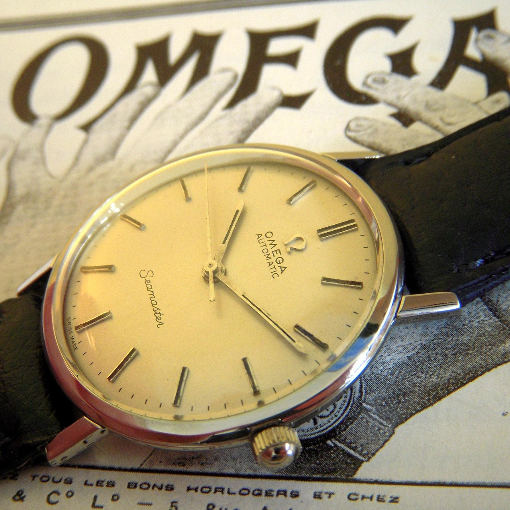

Omega: Precision Beyond Earth
Published: August 2, 2025
Omega is synonymous with performance, accuracy, and history-making moments. It was the first watch on the moon, worn by NASA astronauts during the Apollo 11 mission in 1969.
Its Speedmaster, Seamaster, and Constellation lines continue to impress professionals and adventurers alike. Omega’s dedication to innovation, anti-magnetic technology, and co-axial escapement systems keeps it at the cutting edge of Swiss horology.
Whether in deep oceans or outer space, Omega has proven that it's a brand built for greatness.